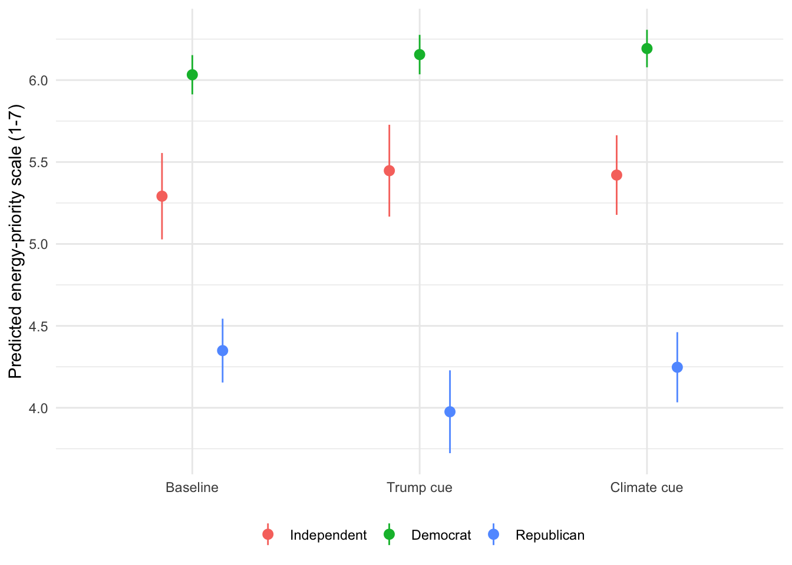
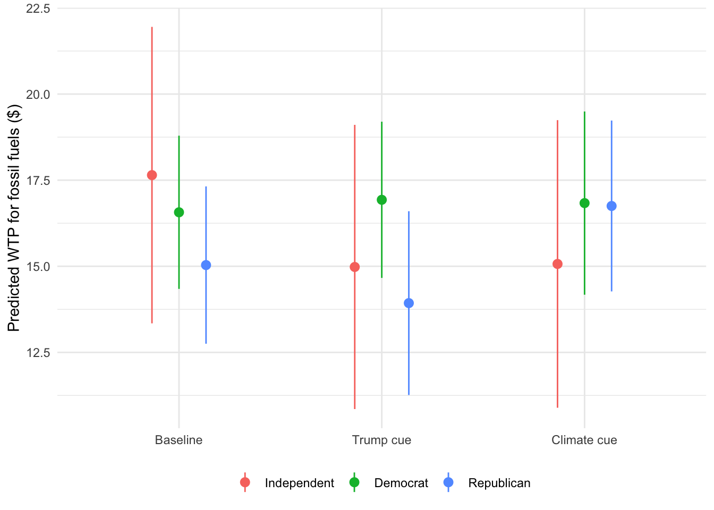
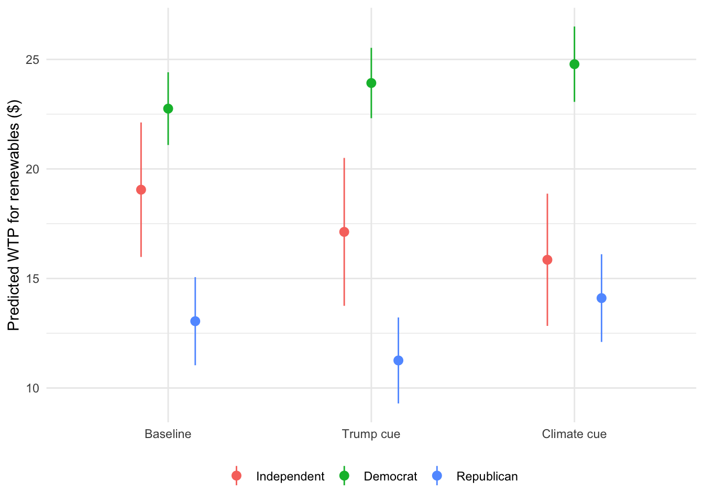
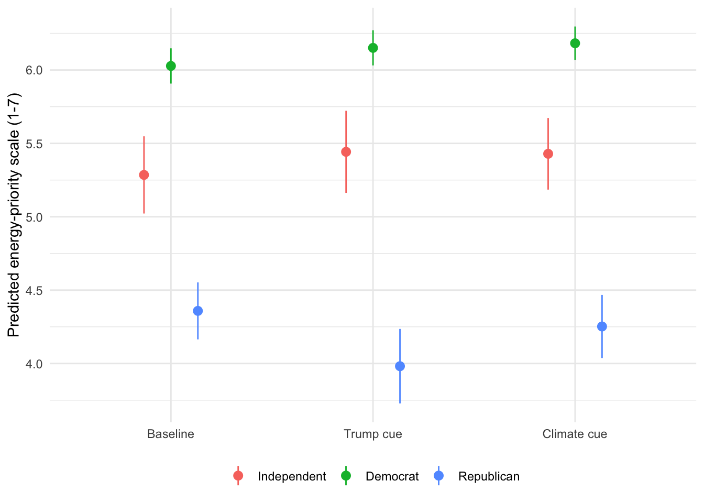
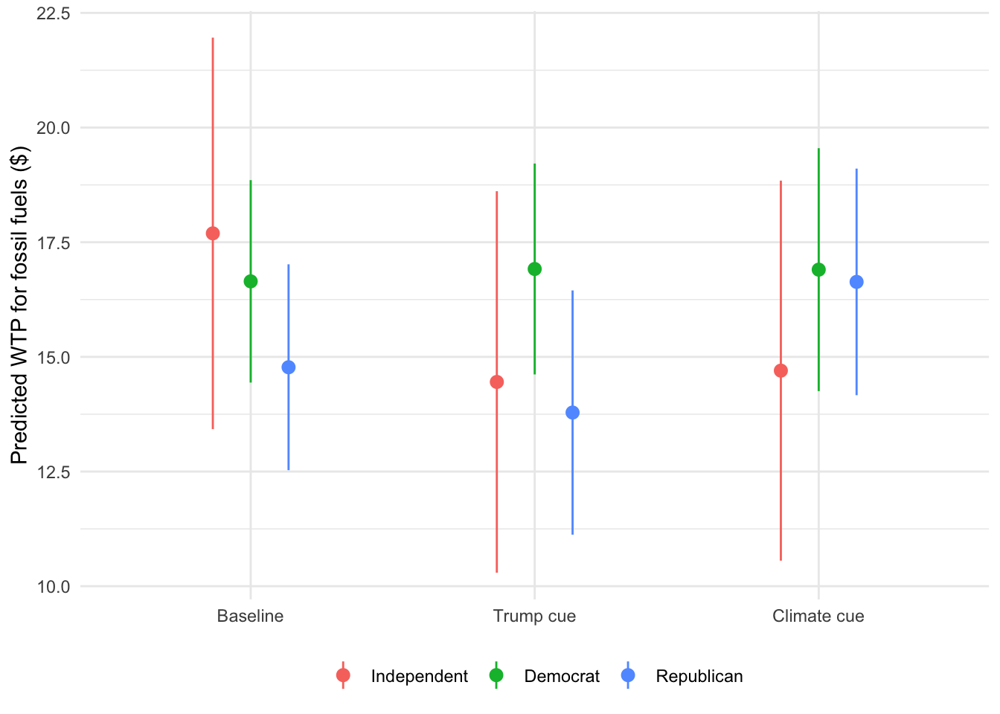
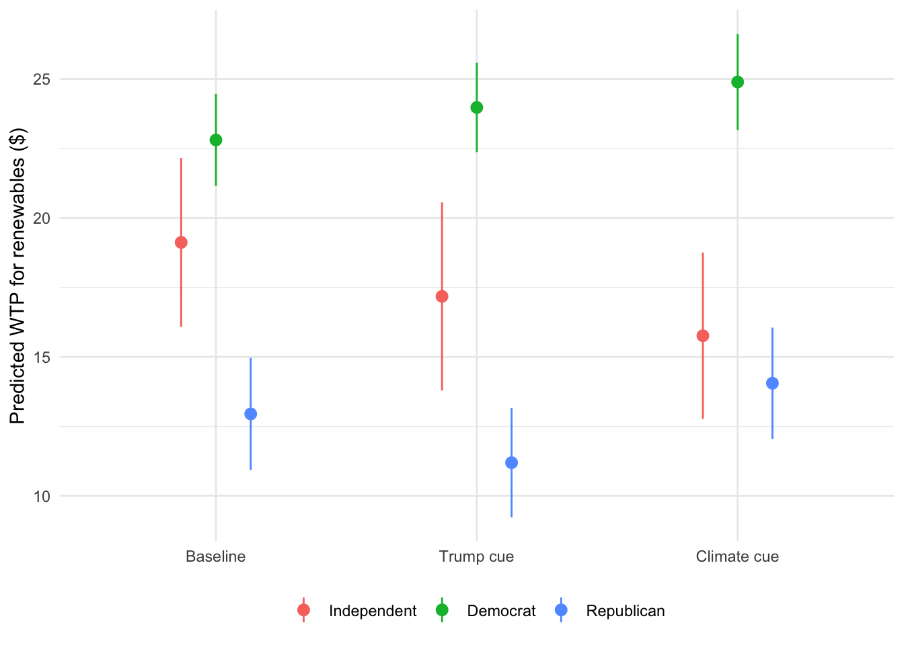

| Priority scale | |
|---|---|
| † p < 0.1, * p < 0.05, ** p < 0.01 | |
| Trump cue | 0.156 |
| (0.195) | |
| Climate cue | 0.129 |
| (0.182) | |
| Democrat | 0.741** |
| (0.147) | |
| Republican | -0.942** |
| (0.168) | |
| Trump cue × Democrat | -0.033 |
| (0.213) | |
| Climate cue × Democrat | 0.031 |
| (0.200) | |
| Trump cue × Republican | -0.529* |
| (0.254) | |
| Climate cue × Republican | -0.231 |
| (0.235) | |
| Age | -0.012** |
| (0.002) | |
| Male | 0.181** |
| (0.069) | |
| White | 0.193* |
| (0.081) | |
| Education | 0.052** |
| (0.019) | |
| Income | 0.017 |
| (0.013) | |
| (Intercept) | 5.397** |
| (0.178) | |
| Num.Obs. | 3113 |
| Adj. R2 | 0.307 |
Supplemental Materials: Cues, Partisanship, and Willingness-to-Pay for Energy
Robustness Check: Controlling for Demographics
The main text models the effect of cue condition, party identification, and their interaction on energy-source prioritization and willingness-to-pay (WTP) without any additional controls. This appendix reports two robustness checks. This section re-estimates every main-text model controlling for age, male, white, education, and income, and the following section adds concern about the cost of electricity to those demographic controls. As shown below, the coefficients and the substantive conclusions are consistent with the main text, though a few interactions near the .05 threshold move slightly across it.
The results for the energy source-priority scale are shown in Table 1, parallel to the priority-scale table in the main text.

As in the main text, Republicans were more likely to prioritize fossil fuels (b = -0.94, p < .001) and Democrats more likely to prioritize renewables (b = 0.74, p < .001). The interaction terms significant at p \(\leq\) .10 in this specification are:
- Republican: b = -0.94, p = 0.000
- Democrat: b = 0.74, p = 0.000
- Trump cue × Republican: b = -0.53, p = 0.037
The results for the WTP models are shown in Table 2, parallel to the WTP models table in the main text.
| Fossil fuels: Any WTP (logit) | Fossil fuels: Amount, if WTP > $0 (OLS) | Renewables: Amount (OLS) | |
|---|---|---|---|
| † p < 0.1, * p < 0.05, ** p < 0.01 | |||
| Trump cue | -0.565* | -2.667 | -1.925 |
| (0.265) | (3.042) | (2.324) | |
| Climate cue | -0.370 | -2.580 | -3.199 |
| (0.262) | (3.055) | (2.194) | |
| Democrat | -0.432* | -1.080 | 3.700* |
| (0.206) | (2.465) | (1.777) | |
| Republican | 0.604** | -2.612 | -6.002** |
| (0.228) | (2.498) | (1.881) | |
| Trump cue × Democrat | 0.329 | 3.030 | 3.095 |
| (0.300) | (3.435) | (2.600) | |
| Climate cue × Democrat | 0.243 | 2.847 | 5.228* |
| (0.299) | (3.507) | (2.506) | |
| Trump cue × Republican | 0.651† | 1.563 | 0.133 |
| (0.333) | (3.516) | (2.716) | |
| Climate cue × Republican | 0.485 | 4.295 | 4.253 |
| (0.328) | (3.509) | (2.621) | |
| Age | 0.008* | -0.016 | -0.111** |
| (0.003) | (0.033) | (0.025) | |
| Male | -0.007 | -0.250 | 0.334 |
| (0.093) | (1.017) | (0.720) | |
| White | -0.306** | 1.012 | 2.875** |
| (0.110) | (1.215) | (0.883) | |
| Education | -0.030 | 1.192** | 0.477* |
| (0.027) | (0.289) | (0.209) | |
| Income | -0.030 | 0.315 | 0.502** |
| (0.019) | (0.211) | (0.145) | |
| (Intercept) | 0.155 | 12.455** | 18.638** |
| (0.241) | (2.901) | (1.996) | |
| Num.Obs. | 3113 | 1433 | 3113 |
| Adj. R2 | 0.021 | 0.111 | |
| McFadden's pseudo R2 | 0.065 | ||


For fossil fuels, Republicans remained significantly more likely than those who identify with neither party to have any positive WTP (b = 0.60, log-odds scale, p = 0.008), and Democrats less likely (b = -0.43, p = 0.036). As in the main text, the Trump cue x Republican interaction for any positive WTP was marginally significant (b = 0.65, p = 0.051). For renewables, Democrats were willing to pay $3.70 more on average, and Republicans $6.00 less (p = 0.001). The climate cue x Democrat interaction was significant (b = 5.23, p = 0.037), and the climate cue x Republican interaction was similar in size (b = 4.25, p = 0.105), which is the same pattern, with nearly the same magnitudes, reported in the main text without these controls.
Summary. Adding demographic controls does not change the sign of any cue x party identification coefficient and shifts coefficient magnitudes only slightly. The Trump cue x Republican interaction for the priority scale remains significant (b = -0.53, p = 0.037), and the climate cue x Democrat interaction for the priority scale remains near zero. The main text’s cue and party identification effects on energy prioritization and WTP are likely not an artifact of the demographic composition of respondents in each cue and party group.
Robustness Check: Controlling for Demographics and Concern about Energy Cost
Energy affordability was a salient concern during the period of data collection, as respondents’ mean concern about the cost of electricity was 7.88 on a 0 to 10 scale. Because this concern could plausibly confound cue and party identification effects on prioritization and WTP, this section re-estimates every main-text model controlling for demographics (age, male, white, education, and income) plus concern about energy cost. As shown below, the coefficients and the substantive conclusions are consistent with the main text.
The results for the energy source-priority scale are shown in Table 3, parallel to the priority-scale table in the main text.
| Priority scale | |
|---|---|
| † p < 0.1, * p < 0.05, ** p < 0.01 | |
| Trump cue | 0.157 |
| (0.195) | |
| Climate cue | 0.144 |
| (0.182) | |
| Democrat | 0.743** |
| (0.147) | |
| Republican | -0.927** |
| (0.167) | |
| Trump cue × Democrat | -0.034 |
| (0.213) | |
| Climate cue × Democrat | 0.011 |
| (0.200) | |
| Trump cue × Republican | -0.534* |
| (0.254) | |
| Climate cue × Republican | -0.250 |
| (0.234) | |
| Concern about energy cost | 0.037* |
| (0.016) | |
| Age | -0.013** |
| (0.002) | |
| Male | 0.193** |
| (0.069) | |
| White | 0.191* |
| (0.080) | |
| Education | 0.054** |
| (0.019) | |
| Income | 0.019 |
| (0.013) | |
| (Intercept) | 5.121** |
| (0.217) | |
| Num.Obs. | 3113 |
| Adj. R2 | 0.309 |

As in the main text, Republicans were more likely to prioritize fossil fuels (b = -0.93, p < .001) and Democrats more likely to prioritize renewables (b = 0.74, p < .001). The interaction terms significant at p \(\leq\) .10 in this specification are:
- Republican: b = -0.93, p = 0.000
- Democrat: b = 0.74, p = 0.000
- Trump cue × Republican: b = -0.53, p = 0.035
The results for the WTP models are shown in Table 4, parallel to the WTP models table in the main text.
| Fossil fuels: Any WTP (logit) | Fossil fuels: Amount, if WTP > $0 (OLS) | Renewables: Amount (OLS) | |
|---|---|---|---|
| † p < 0.1, * p < 0.05, ** p < 0.01 | |||
| Trump cue | -0.570* | -3.240 | -1.942 |
| (0.263) | (3.044) | (2.316) | |
| Climate cue | -0.399 | -2.993 | -3.357 |
| (0.263) | (3.035) | (2.173) | |
| Democrat | -0.437* | -1.046 | 3.686* |
| (0.207) | (2.443) | (1.762) | |
| Republican | 0.578* | -2.919 | -6.170** |
| (0.229) | (2.477) | (1.871) | |
| Trump cue × Democrat | 0.334 | 3.510 | 3.110 |
| (0.298) | (3.437) | (2.592) | |
| Climate cue × Democrat | 0.281 | 3.248 | 5.443* |
| (0.300) | (3.483) | (2.489) | |
| Trump cue × Republican | 0.663* | 2.252 | 0.189 |
| (0.331) | (3.513) | (2.710) | |
| Climate cue × Republican | 0.522 | 4.854 | 4.462† |
| (0.328) | (3.485) | (2.603) | |
| Concern about energy cost | -0.064** | -0.643** | -0.389* |
| (0.022) | (0.222) | (0.165) | |
| Age | 0.009** | -0.003 | -0.102** |
| (0.003) | (0.033) | (0.025) | |
| Male | -0.027 | -0.508 | 0.213 |
| (0.093) | (1.027) | (0.719) | |
| White | -0.304** | 1.059 | 2.893** |
| (0.110) | (1.214) | (0.886) | |
| Education | -0.034 | 1.172** | 0.456* |
| (0.027) | (0.290) | (0.209) | |
| Income | -0.034† | 0.279 | 0.479** |
| (0.019) | (0.210) | (0.145) | |
| (Intercept) | 0.641* | 17.258** | 21.571** |
| (0.294) | (3.360) | (2.358) | |
| Num.Obs. | 3113 | 1433 | 3113 |
| Adj. R2 | 0.028 | 0.113 | |
| McFadden's pseudo R2 | 0.068 | ||


For fossil fuels, Republicans remained significantly more likely than those who identify with neither party to have any positive WTP (b = 0.58, log-odds scale, p = 0.011), and Democrats less likely (b = -0.44, p = 0.035). The Trump cue x Republican interaction for any positive WTP was significant in this specification (b = 0.66, p = 0.045), compared to marginally significant in the main text. For renewables, Democrats were willing to pay $3.69 more on average, and Republicans $6.17 less (p < .001). The climate cue x Democrat interaction was significant (b = 5.44, p = 0.029), and the climate cue x Republican interaction was similar in size (b = 4.46, p = 0.087), which is the same pattern, with nearly the same magnitudes, reported in the main text without this control.
Summary. Adding concern about energy cost as a control does not change the sign of any cue x party identification coefficient and shifts coefficient magnitudes only slightly. The Trump cue x Republican interaction for the priority scale remains significant (b = -0.53, p = 0.035), and the Trump cue x Republican interaction for any positive WTP for fossil fuels moves just below the .05 threshold. The main text’s cue and party identification effects on energy prioritization and WTP are likely not an artifact of differential cost sensitivity across respondents.
Robustness Check: Concern about Energy Cost Interacted with Cues and Party Identification
The prior section controls for concern about energy cost, entering it additively. This section asks whether the cost-concern effect itself varies by cue condition or party identification, so every main-text model is re-estimated with concern about energy cost interacted with both cue conditions and with party identification, in addition to the demographic controls (age, male, white, education, income). Because of these interactions, the concern-about-cost coefficient is the effect of cost concern among those who identify with neither party in the baseline condition.
The results for the energy source-priority scale are shown in Table 5.
| Priority scale | |
|---|---|
| † p < 0.1, * p < 0.05, ** p < 0.01 | |
| Trump cue | 0.413 |
| (0.367) | |
| Climate cue | 0.390 |
| (0.344) | |
| Democrat | 0.474 |
| (0.348) | |
| Republican | -0.678† |
| (0.392) | |
| Trump cue × Democrat | -0.034 |
| (0.213) | |
| Climate cue × Democrat | 0.011 |
| (0.202) | |
| Trump cue × Republican | -0.535* |
| (0.254) | |
| Climate cue × Republican | -0.249 |
| (0.235) | |
| Concern about energy cost | 0.059 |
| (0.041) | |
| Trump cue × Concern about energy cost | -0.032 |
| (0.040) | |
| Climate cue × Concern about energy cost | -0.032 |
| (0.038) | |
| Concern about energy cost × Democrat | 0.034 |
| (0.039) | |
| Concern about energy cost × Republican | -0.032 |
| (0.046) | |
| Age | -0.013** |
| (0.002) | |
| Male | 0.196** |
| (0.069) | |
| White | 0.197* |
| (0.081) | |
| Education | 0.053** |
| (0.019) | |
| Income | 0.019 |
| (0.013) | |
| (Intercept) | 4.941** |
| (0.370) | |
| Num.Obs. | 3113 |
| Adj. R2 | 0.31 |
Concern about energy cost did not significantly predict the priority scale among those who identify with neither party in the baseline condition (b = 0.06, p = 0.158), and the effect of cost concern did not differ significantly for Democrats (b = 0.03, p = 0.392) or Republicans (b = -0.03, p = 0.482). The concern-about-cost terms significant at p \(\leq\) .10 in this specification are:
- None of the concern-about-cost terms were significant at p \(\leq\) .10.
The results for the WTP models are shown in Table 6.
| Fossil fuels: Any WTP (logit) | Fossil fuels: Amount, if WTP > $0 (OLS) | Renewables: Amount (OLS) | |
|---|---|---|---|
| † p < 0.1, * p < 0.05, ** p < 0.01 | |||
| Trump cue | -0.418 | -11.903* | -2.753 |
| (0.490) | (5.060) | (3.751) | |
| Climate cue | -0.361 | -8.521† | -5.629 |
| (0.496) | (4.955) | (3.791) | |
| Democrat | -1.060* | -4.162 | -2.955 |
| (0.534) | (5.275) | (4.252) | |
| Republican | 0.051 | -5.011 | -12.631** |
| (0.573) | (5.224) | (4.307) | |
| Trump cue × Democrat | 0.344 | 3.225 | 3.118 |
| (0.299) | (3.450) | (2.591) | |
| Climate cue × Democrat | 0.305 | 3.259 | 5.592* |
| (0.304) | (3.481) | (2.461) | |
| Trump cue × Republican | 0.671* | 2.249 | 0.216 |
| (0.332) | (3.534) | (2.710) | |
| Climate cue × Republican | 0.547† | 5.131 | 4.705† |
| (0.332) | (3.486) | (2.579) | |
| Concern about energy cost | -0.120† | -1.503** | -1.247** |
| (0.062) | (0.573) | (0.466) | |
| Trump cue × Concern about energy cost | -0.021 | 1.135* | 0.101 |
| (0.052) | (0.531) | (0.384) | |
| Climate cue × Concern about energy cost | -0.008 | 0.694 | 0.261 |
| (0.053) | (0.502) | (0.397) | |
| Concern about energy cost × Democrat | 0.078 | 0.400 | 0.840† |
| (0.060) | (0.577) | (0.486) | |
| Concern about energy cost × Republican | 0.066 | 0.247 | 0.816† |
| (0.066) | (0.562) | (0.493) | |
| Age | 0.009** | -0.002 | -0.103** |
| (0.003) | (0.034) | (0.025) | |
| Male | -0.027 | -0.444 | 0.201 |
| (0.093) | (1.028) | (0.720) | |
| White | -0.300** | 0.896 | 2.899** |
| (0.110) | (1.224) | (0.887) | |
| Education | -0.034 | 1.173** | 0.453* |
| (0.027) | (0.290) | (0.209) | |
| Income | -0.034† | 0.287 | 0.488** |
| (0.019) | (0.210) | (0.146) | |
| (Intercept) | 1.080† | 23.982** | 28.346** |
| (0.561) | (5.478) | (4.269) | |
| Num.Obs. | 3113 | 1433 | 3113 |
| Adj. R2 | 0.03 | 0.113 | |
| McFadden's pseudo R2 | 0.068 | ||
For fossil fuels, concern about energy cost was associated with lower odds of any positive WTP among those who identify with neither party, though this effect was only marginally significant (b = -0.12, log-odds scale, p = 0.054), and it did not differ significantly for Democrats (b = 0.08, p = 0.195) or Republicans (b = 0.07, p = 0.314). Among those with any positive fossil-fuel WTP, concern about energy cost lowered the amount they were willing to pay (b = -1.50, p = 0.009), and this penalty was significantly offset under the Trump cue (b = 1.13, p = 0.033). For renewables, concern about energy cost lowered WTP among those who identify with neither party (b = -1.25, p = 0.007), and this penalty was marginally smaller for both Democrats (b = 0.84, p = 0.084) and Republicans (b = 0.82, p = 0.098). The concern-about-cost terms significant at p \(\leq\) .10 in each model are:
Fossil fuels, any positive WTP (logit):
- Concern about energy cost: b = -0.12, p = 0.054
Fossil fuels, amount if WTP > $0 (OLS):
- Concern about energy cost: b = -1.50, p = 0.009
- Trump cue × Concern about energy cost: b = 1.13, p = 0.033
Renewables, amount (OLS):
- Concern about energy cost: b = -1.25, p = 0.007
- Concern about energy cost × Democrat: b = 0.84, p = 0.084
- Concern about energy cost × Republican: b = 0.82, p = 0.098
Summary. Concern about energy cost is not simply a nuisance control, as it is associated with lower WTP for both fossil fuels and renewables, and its dampening effect on the fossil-fuel WTP amount is significantly offset under the Trump cue. Its relationship with energy priority and WTP does not differ significantly by party identification, though for renewables the cost penalty is marginally smaller among partisans than among those who identify with neither party. None of this changes the sign of the main-text cue x party identification effects (Table 3 and Table 4), which have similar magnitudes in this specification.
Covariate Balance across Conditions
Table 7 shows the unweighted mean of each demographic variable, concern about the cost of electricity, and the two party identification measures in each condition, along with the p-value from a one-way F-test of each variable on condition. The conditions differ somewhat in age and in the share of white respondents, which is why the main-text models are also estimated with demographic controls. Party identification was measured after the outcome questions, so the party identification rows also test whether the cues changed how respondents identified. The distribution of party identification did not differ across conditions (\(\chi^2\) = 3.29, df = 4, p = 0.511).
| Variable | Baseline | Trump cue | Climate cue | p |
|---|---|---|---|---|
| Age | 42.63 | 43.76 | 44.51 | 0.019 |
| Male | 0.49 | 0.48 | 0.49 | 0.915 |
| White | 0.69 | 0.70 | 0.63 | 0.002 |
| College degree | 0.56 | 0.56 | 0.55 | 0.772 |
| Income (1-11) | 4.71 | 4.55 | 4.61 | 0.415 |
| Concern about electricity cost (0-10) | 7.73 | 7.81 | 7.87 | 0.326 |
| Democrat (post-treatment) | 0.55 | 0.58 | 0.56 | 0.208 |
| Republican (post-treatment) | 0.29 | 0.27 | 0.29 | 0.488 |
Average Effects of the Cues
In the main-text models, the cues are interacted with party identification, so the coefficients for the Trump and climate cues are the effects of the cues among those who identify with neither party only. Table 8 reports models with the cues alone, which estimate the average effect of each cue across the full sample. Neither cue had a significant average effect on energy source priority or on either WTP outcome.
| Priority scale (OLS) | Fossil fuels: Any WTP (logit) | Fossil fuels: Amount, if WTP > $0 (OLS) | Renewables: Amount (OLS) | |
|---|---|---|---|---|
| † p < 0.1, * p < 0.05, ** p < 0.01 | ||||
| Trump cue | -0.028 | -0.162 | -0.740 | -0.097 |
| (0.103) | (0.108) | (1.205) | (0.925) | |
| Climate cue | 0.028 | -0.023 | 0.745 | 0.857 |
| (0.098) | (0.109) | (1.215) | (0.938) | |
| (Intercept) | 5.174** | 0.180* | 15.691** | 17.945** |
| (0.064) | (0.076) | (0.807) | (0.648) | |
| Num.Obs. | 3113 | 3113 | 1433 | 3113 |
| Adj. R2 | 0 | 0 | 0 | |
| McFadden's pseudo R2 | 0.001 | |||
Multiple Comparisons and Minimum Detectable Effects
Table 9 lists the 16 cue x party identification interaction terms from the four main-text models, with the unadjusted p-value, the p-value after a Holm adjustment across all 16 tests, and the minimum detectable effect (MDE). The MDE is the smallest interaction effect the design could detect with 80 percent power at a two-sided \(\alpha\) = .05, calculated as (1.96 + 0.84) times the standard error. No interaction is significant after the Holm adjustment. The MDEs for the WTP models are large relative to the estimated interactions, so small effects of the cues on WTP cannot be ruled out.
| Model | Term | b | SE | p | Holm p | MDE |
|---|---|---|---|---|---|---|
| Priority scale (OLS) | Trump cue × Democrat | -0.05 | 0.22 | 0.830 | 1.000 | 0.61 |
| Priority scale (OLS) | Trump cue × Republican | -0.52 | 0.26 | 0.043 | 0.681 | 0.72 |
| Priority scale (OLS) | Climate cue × Democrat | 0.01 | 0.21 | 0.946 | 1.000 | 0.58 |
| Priority scale (OLS) | Climate cue × Republican | -0.20 | 0.24 | 0.412 | 1.000 | 0.68 |
| Fossil fuels: Any WTP (logit) | Trump cue × Democrat | 0.35 | 0.30 | 0.246 | 1.000 | 0.84 |
| Fossil fuels: Any WTP (logit) | Trump cue × Republican | 0.63 | 0.33 | 0.055 | 0.766 | 0.92 |
| Fossil fuels: Any WTP (logit) | Climate cue × Democrat | 0.26 | 0.30 | 0.382 | 1.000 | 0.83 |
| Fossil fuels: Any WTP (logit) | Climate cue × Republican | 0.47 | 0.33 | 0.150 | 1.000 | 0.91 |
| Fossil fuels: Amount, if WTP > $0 (OLS) | Trump cue × Democrat | 3.68 | 3.39 | 0.278 | 1.000 | 9.50 |
| Fossil fuels: Amount, if WTP > $0 (OLS) | Trump cue × Republican | 2.74 | 3.48 | 0.431 | 1.000 | 9.76 |
| Fossil fuels: Amount, if WTP > $0 (OLS) | Climate cue × Democrat | 3.71 | 3.52 | 0.292 | 1.000 | 9.86 |
| Fossil fuels: Amount, if WTP > $0 (OLS) | Climate cue × Republican | 5.26 | 3.51 | 0.135 | 1.000 | 9.84 |
| Renewables: Amount (OLS) | Trump cue × Democrat | 2.84 | 2.60 | 0.275 | 1.000 | 7.29 |
| Renewables: Amount (OLS) | Trump cue × Republican | 0.25 | 2.72 | 0.927 | 1.000 | 7.61 |
| Renewables: Amount (OLS) | Climate cue × Democrat | 5.05 | 2.55 | 0.048 | 0.714 | 7.15 |
| Renewables: Amount (OLS) | Climate cue × Republican | 4.50 | 2.67 | 0.092 | 1.000 | 7.49 |
Censored-Normal (Tobit) Models of Willingness-to-Pay
The Gabor-Granger WTP measure is bounded at $0, for respondents who rejected the $1 amount, and at $46, for respondents who accepted the highest amount. Table 10 re-estimates the WTP models for both sources with a censored-normal (Tobit) model that treats $0 as censored from below and $46 as censored from above. Because the follow-up amounts were drawn at random and not recorded, the next amount a respondent rejected is unknown, so values between $1 and $41 are treated as observed. The same model is used for both sources.
| Fossil fuels (Tobit) | Renewables (Tobit) | |
|---|---|---|
| † p < 0.1, * p < 0.05, ** p < 0.01 | ||
| Trump cue | -9.330* | -3.242 |
| (3.722) | (3.278) | |
| Climate cue | -6.801† | -5.037 |
| (3.681) | (3.158) | |
| Democrat | -6.482* | 5.844* |
| (2.981) | (2.526) | |
| Republican | 3.355 | -9.162** |
| (3.036) | (2.676) | |
| Trump cue × Democrat | 6.498 | 4.461 |
| (4.218) | (3.673) | |
| Climate cue × Democrat | 5.813 | 6.939† |
| (4.234) | (3.561) | |
| Trump cue × Republican | 9.636* | 0.782 |
| (4.375) | (3.916) | |
| Climate cue × Republican | 9.603* | 6.280 |
| (4.327) | (3.838) | |
| (Intercept) | 1.115 | 19.865** |
| (2.624) | (2.240) | |
| Num.Obs. | 3113 | 3113 |
For renewables, the results match the main text, as party identification predicts WTP, and no cue x party identification interaction is significant at the .05 level, though the climate cue x Democrat interaction is marginally significant (b = 6.94, p = 0.051). For fossil fuels, the Trump cue x Republican interaction (b = 9.64, p = 0.028) and the climate cue x Republican interaction (b = 9.60, p = 0.026) are significant. However, these interactions reflect a lower WTP for fossil fuels in the cue conditions among those who identify with neither party (Trump cue b = -9.33, p = 0.012), whereas Republicans’ WTP for fossil fuels did not differ from the baseline in either the Trump cue (difference = 0.31, p = 0.893) or the climate cue (difference = 2.80, p = 0.215). The Trump cue x Republican interaction is not significant after a Holm adjustment (adjusted p = 0.47).
Unweighted Models
The survey weights increase the share of Republicans from 29 to 46 percent relative to the unweighted sample, so Table 11 and Table 12 re-estimate the main-text models without the weights. The party identification effects are similar. For the priority scale, neither the Trump cue x Republican interaction (p = 0.135) nor the climate cue x Democrat interaction (p = 0.483) is significant without the weights. For WTP, the cue x party identification interactions significant at p \(\leq\) .10 without the weights are:
- Trump cue × Republican, Fossil fuels, any WTP (logit): b = 0.58, p = 0.042
- Climate cue × Republican, Fossil fuels, any WTP (logit): b = 0.50, p = 0.077
- Climate cue × Republican, Fossil fuels, amount if WTP > $0: b = 5.93, p = 0.045
- Trump cue × Democrat, Renewables, amount: b = 4.17, p = 0.053
- Climate cue × Democrat, Renewables, amount: b = 5.03, p = 0.021
- Climate cue × Republican, Renewables, amount: b = 5.26, p = 0.025
As in the main text, the cue coefficients for those who identify with neither party are negative in each of the unweighted WTP models, so these interactions likely reflect lower WTP in the cue conditions among that small group rather than shifts among partisans.
| Priority scale | |
|---|---|
| † p < 0.1, * p < 0.05, ** p < 0.01 | |
| Trump cue | 0.057 |
| (0.165) | |
| Climate cue | -0.036 |
| (0.165) | |
| Democrat | 0.680** |
| (0.125) | |
| Republican | -1.037** |
| (0.146) | |
| Trump cue × Democrat | 0.065 |
| (0.177) | |
| Climate cue × Democrat | 0.125 |
| (0.178) | |
| Trump cue × Republican | -0.321 |
| (0.214) | |
| Climate cue × Republican | 0.053 |
| (0.212) | |
| (Intercept) | 5.440** |
| (0.115) | |
| Num.Obs. | 3113 |
| Adj. R2 | 0.267 |
| Fossil fuels: Any WTP (logit) | Fossil fuels: Amount, if WTP > $0 (OLS) | Renewables: Amount (OLS) | |
|---|---|---|---|
| † p < 0.1, * p < 0.05, ** p < 0.01 | |||
| Trump cue | -0.479* | -2.733 | -2.955 |
| (0.229) | (2.652) | (1.916) | |
| Climate cue | -0.362 | -4.809† | -3.715† |
| (0.227) | (2.493) | (1.927) | |
| Democrat | -0.456* | -0.721 | 4.046** |
| (0.177) | (2.062) | (1.528) | |
| Republican | 0.598** | -2.145 | -5.829** |
| (0.195) | (2.093) | (1.626) | |
| Trump cue × Democrat | 0.262 | 2.361 | 4.174† |
| (0.259) | (3.032) | (2.160) | |
| Climate cue × Democrat | 0.278 | 4.141 | 5.027* |
| (0.258) | (2.920) | (2.176) | |
| Trump cue × Republican | 0.585* | 2.148 | 2.038 |
| (0.287) | (3.107) | (2.320) | |
| Climate cue × Republican | 0.503† | 5.926* | 5.256* |
| (0.285) | (2.958) | (2.339) | |
| (Intercept) | 0.000 | 18.470** | 19.867** |
| (0.155) | (1.782) | (1.352) | |
| Num.Obs. | 3113 | 1433 | 3113 |
| Adj. R2 | -0.001 | 0.074 | |
| McFadden's pseudo R2 | 0.053 | ||